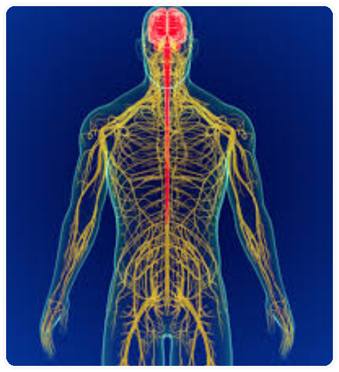

NERVOSO
O sistema nervoso representa uma rede de comunicações do organismo. É formado por um conjunto de órgãos do corpo humano que possuem a função de captar as mensagens, estímulos do ambiente, “interpretá-los” e “arquivá-los”. Consequentemente, ele elabora respostas, as quais podem ser dadas na forma de movimentos, sensações ou constatações.
